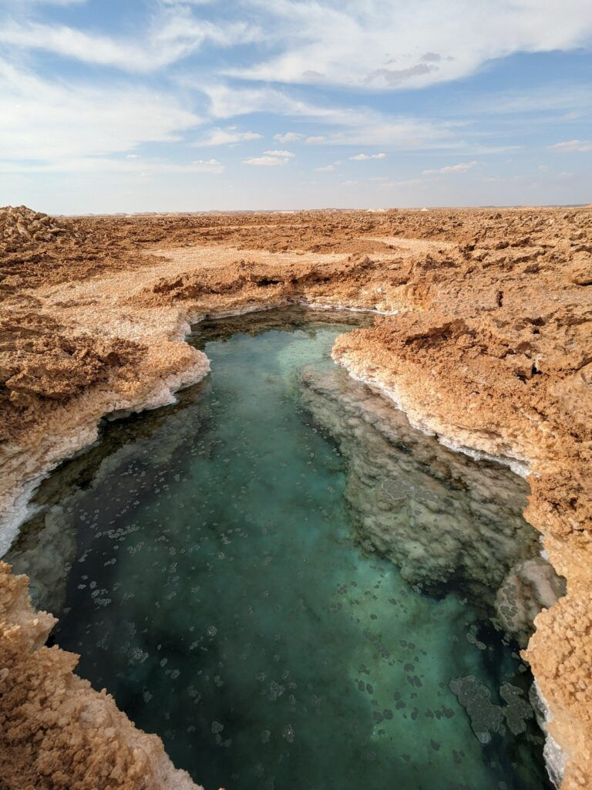

Siwa Oasis is one of Egypt's most beautiful natural destinations. Located in the Western Desert near the Libyan border, it is famous for its palm trees, natural springs, salt lakes, and unique culture. Visitors enjoy its peaceful atmosphere, stunning landscapes, and historical sites such as the Temple of the Oracle.